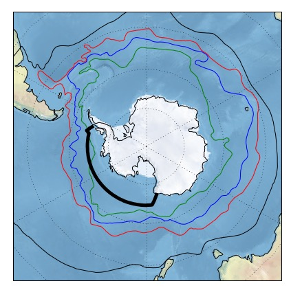
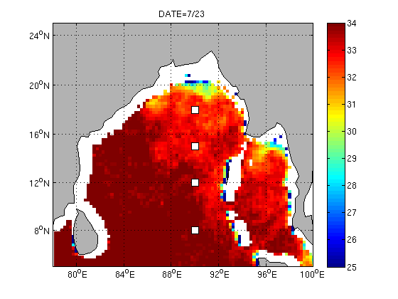

Currently I am working with Ryan Abernathey on a project examining water mass transformations in the Ross Sea
in temperature-salinity space. We are using a combination of WOCE and GO-SHIP hydrography, as well as SOSE, a data assimilative
climate model, to study the thermodynamics of the circulation in the Ross gyre. By calculating geostrophic velocities and volume transports from the
hydrographic sections and comparing with SOSE output, we also hope to examine model biases. The
map on the left shows the shiptrack of the hydrographic sections (in bold black) and the different flow regimes of the
Antarctic Circumpolar Current.

Last year I was a Summer Student Fellow at Woods Hole Oceanographic Institution. I worked with Hyodae Seo on a project investigating how upper ocean variability affects air-sea coupling in the Bay of Bengal. We computed heat and salt budgets of moored observations in order to study the role of freshwater plumes in affecting the spatio-temporal characteristics of monsoon storms. This animation of daily satellite sea surface salinity (from SMAP) shows the arrival of riverwater to the mooring locations. The shoaling of the mixed layer that corresponded to this freshwater intrusion led to an amplified SST response to surface heat fluxes.
Some of the topics I hope to explore in graduate school include: the role of wind forcings and mesoscale eddies in determining sea ice extent and variability, turbulence and mixing generated by ocean-ice-atmosphere interactions, as well as the effect of air-sea exchanges on water mass transformations in Antarctica's marginal seas and the transport pathways for Antarctic Bottom Water from the continental shelf. I also hope to learn more about bio-physical interactions, particularly examining how the overturning circulation controls the fluxes of carbon and essential nutrients between the surface and abyssal ocean.